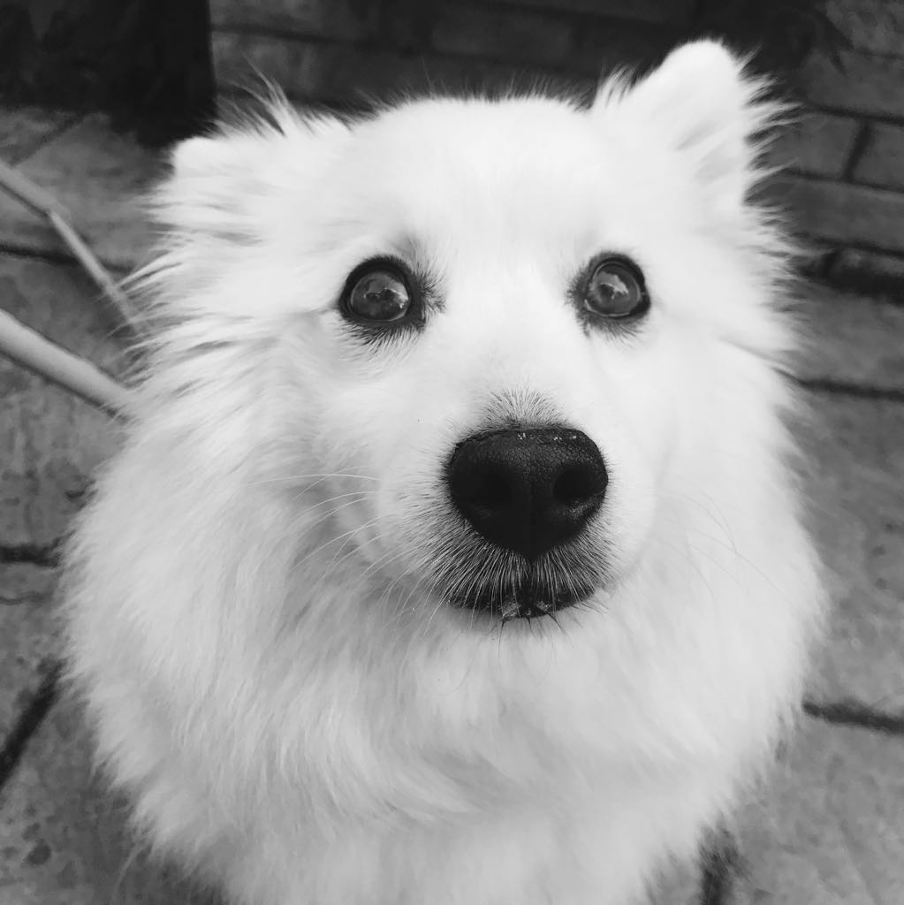
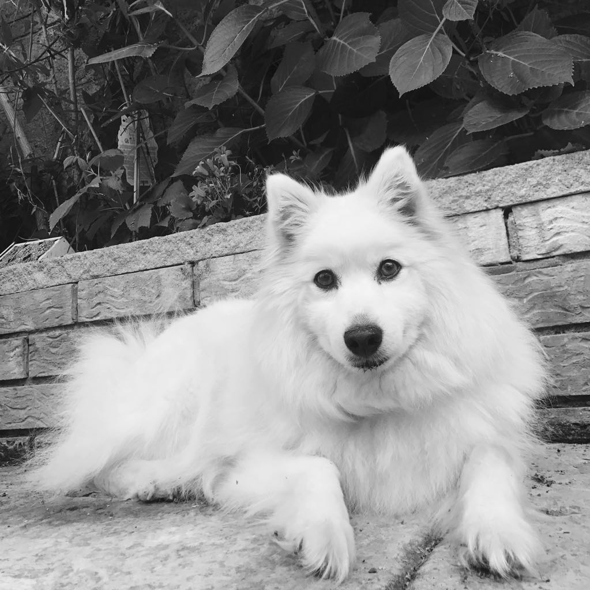
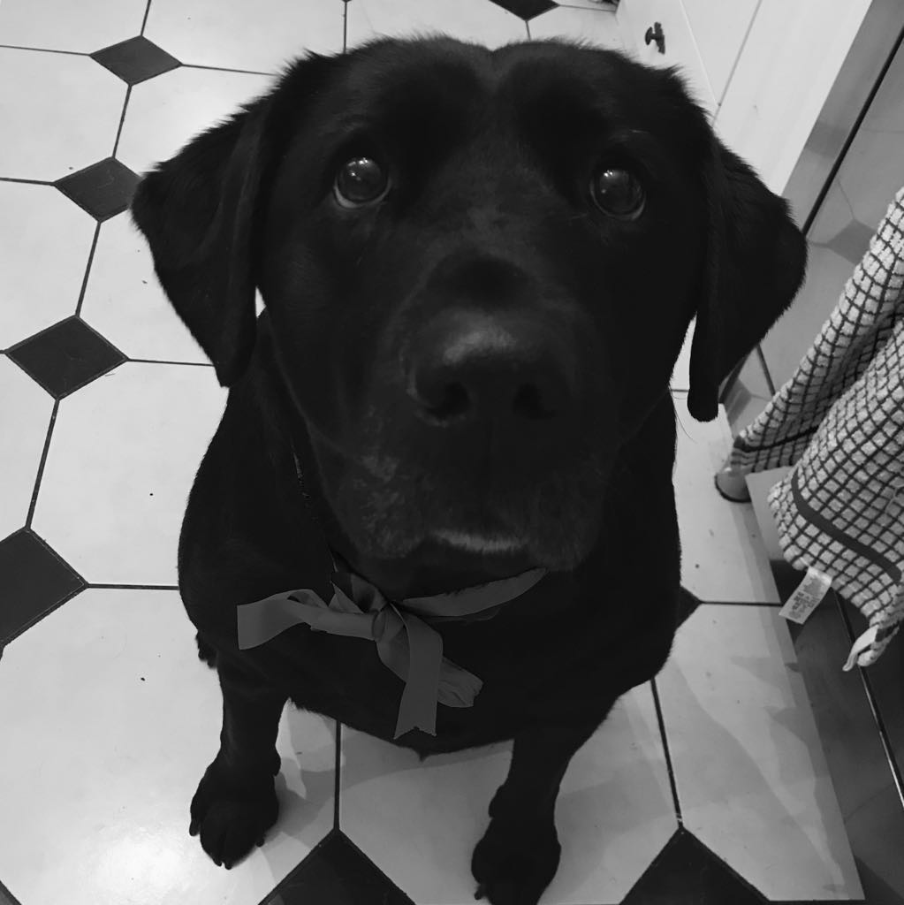
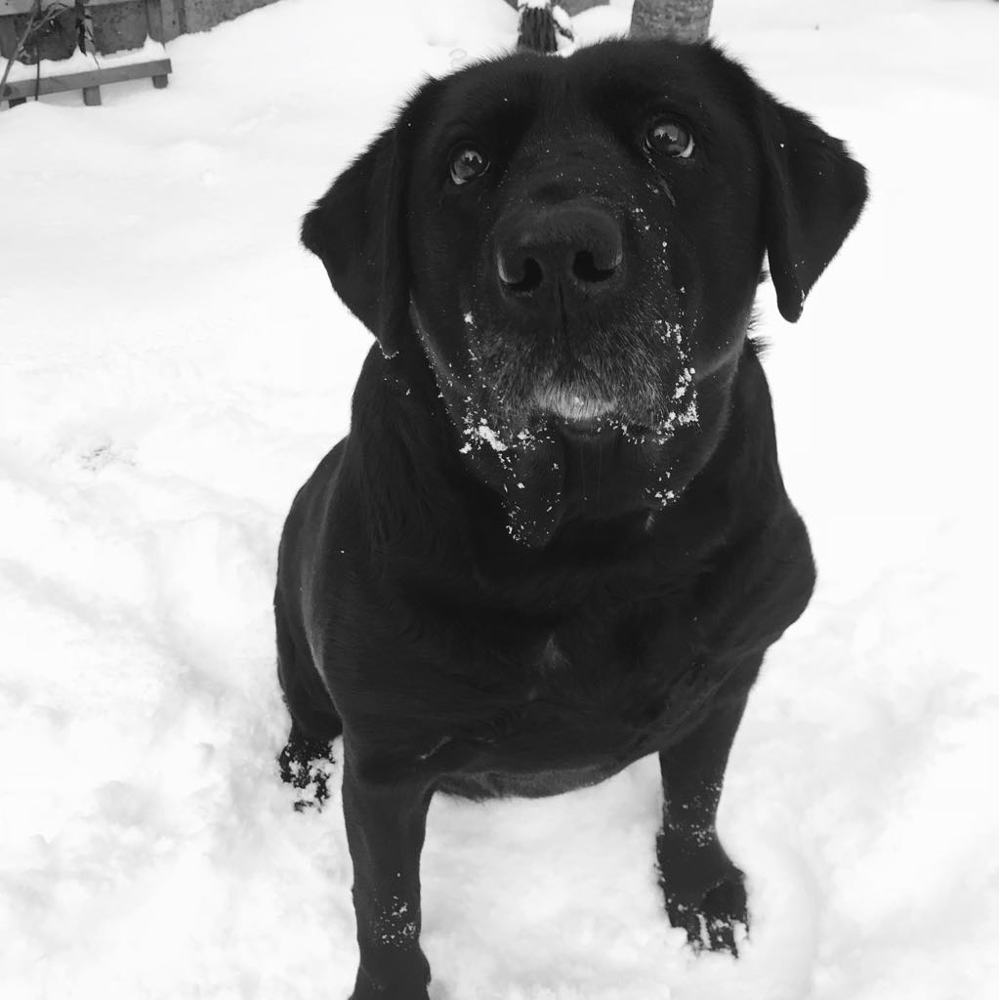

Poppy
Poppy is a nine year old, white Japanese Spitz. She is very small, with a huge personality. Spitzes are known for their intelligence, loyalty and companionship. Poppy is certainly a great example of this. Sometimes we call her a 'little lady', because she always seems so elegant and composed. Her favourite food is red pepper, and her favourite activity is lazing around in the sun. In the summer, you will always find her in the garden lapping it up.
 Leela
Leela is the opposite of Poppy in many ways. She is a seven year old black Labrador who is always up to no good. She is the most friendly giant you could imagine. Her favourite thing to do is be silly. She will run around with your shoe, or tell you loudly when she wants to go for a walk, or bark at the cats outside. Her favourite game is definitely fetch, she can play that for hours! Unlike Poppy, Leela adores the snow. In the winter, you can find her trying to play fetch with snowballs... ouch!
 